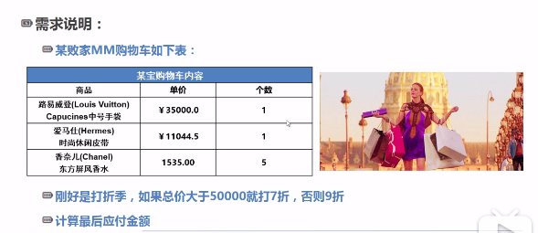

判断
流程图
判断结构要求程序员指定一个或多个要评估或测试的条件，以及条件为真时要执行的语句（必需的）和条件为假时要执行的语句（可选的）。
下面是大多数编程语言中典型的判断结构的一般形式：

判断语句
C++ 编程语言提供了以下类型的判断语句。点击链接查看每个语句的细节。
| 语句 |
描述 |
| if 语句 |
一个 if 语句 由一个布尔表达式后跟一个或多个语句组成。 |
| if…else 语句 |
一个 if 语句 后可跟一个可选的 else 语句，else 语句在布尔表达式为假时执行。 |
| 嵌套 if 语句 |
您可以在一个 if 或 else if 语句内使用另一个 if 或 else if 语句。 |
| switch 语句 |
一个 switch 语句允许测试一个变量等于多个值时的情况。 |
| 嵌套 switch 语句 |
您可以在一个 switch 语句内使用另一个 switch 语句。 |
判断语法
if(boolean_expression)
{
}
if(boolean_expression)
{
}
else
{
}
if( boolean_expression 1)
{
if(boolean_expression 2)
{
}
}
switch(expression){
case constant-expression :
statement(s);
break;
case constant-expression :
statement(s);
break;
default :
statement(s);
}
switch(ch1) {
case 'A':
cout << "这个 A 是外部 switch 的一部分";
switch(ch2) {
case 'A':
cout << "这个 A 是内部 switch 的一部分";
break;
case 'B':
}
break;
case 'B':
}
|
? : 运算符
我们已经在前面的章节中讲解了 条件运算符 ? :，可以用来替代 if…else 语句。它的一般形式如下：
其中，Exp1、Exp2 和 Exp3 是表达式。请注意，冒号的使用和位置。
? 表达式的值是由 Exp1 决定的。如果 Exp1 为真，则计算 Exp2 的值，结果即为整个 ? 表达式的值。如果 Exp1 为假，则计算 Exp3 的值，结果即为整个 ? 表达式的值。
循环
流程图
有的时候，可能需要多次执行同一块代码。一般情况下，语句是顺序执行的：函数中的第一个语句先执行，接着是第二个语句，依此类推。
编程语言提供了允许更为复杂的执行路径的多种控制结构。
循环语句允许我们多次执行一个语句或语句组，下面是大多数编程语言中循环语句的一般形式：

循环类型
C++ 编程语言提供了以下几种循环类型。点击链接查看每个类型的细节。
| 循环类型 |
描述 |
| while 循环 |
当给定条件为真时，重复语句或语句组。它会在执行循环主体之前测试条件。 |
| for 循环 |
多次执行一个语句序列，简化管理循环变量的代码。 |
| do…while 循环 |
除了它是在循环主体结尾测试条件外，其他与 while 语句类似。 |
| 嵌套循环 |
您可以在 while、for 或 do..while 循环内使用一个或多个循环。 |
循环语法
while(condition)
{
statement(s);
}
for ( init; condition; increment )
{
statement(s);
}
do
{
statement(s);
}while( condition );
for ( init; condition; increment )
{
for ( init; condition; increment )
{
statement(s);
}
statement(s);
}
while(condition)
{
while(condition)
{
statement(s);
}
statement(s);
}
do
{
statement(s);
do
{
statement(s);
}while( condition );
}while( condition );
break;
continue;
goto label;
..
.
label: statement;
|
循环控制
循环控制语句更改执行的正常序列。当执行离开一个范围时，所有在该范围中创建的自动对象都会被销毁。
C++ 提供了下列的控制语句。点击链接查看每个语句的细节。
| 控制语句 |
描述 |
| break 语句 |
终止 loop 或 switch 语句，程序流将继续执行紧接着 loop 或 switch 的下一条语句。 |
| continue 语句 |
引起循环跳过主体的剩余部分，立即重新开始测试条件。 |
| goto 语句 |
将控制转移到被标记的语句。但是不建议在程序中使用 goto 语句。 |
无限循环
如果条件永远不为假，则循环将变成无限循环。for 循环在传统意义上可用于实现无限循环。由于构成循环的三个表达式中任何一个都不是必需的，您可以将某些条件表达式留空来构成一个无限循环。
#include <iostream>
using namespace std;
int main ()
{
for( ; ; )
{
printf("This loop will run forever.\n");
}
return 0;
}
|
当条件表达式不存在时，它被假设为真。您也可以设置一个初始值和增量表达式，但是一般情况下，C++ 程序员偏向于使用 for(;;) 结构来表示一个无限循环。
注意：您可以按 Ctrl + C 键终止一个无限循环。
课堂练习
购物小应用

需求说明：
某败家MM购物车如下:
| 商品 |
单价 |
个数 |
| 路易斯威登中号手袋 |
35000.0 |
1 |
| 爱马仕时尚休闲皮带 |
11044.5 |
1 |
| 香奈儿东方屏风香水 |
1535.00 |
5 |
刚好是打折季，如果总价大于50000 就打折7折，否则9折
计算最后应付金额
#include <iostream>
#include <cmath>
#include <iomanip>
using namespace std;
int main()
{
double handbag = 35000.0 * 1;
double belt = 11044.5 * 1;
double perfume = 1535.00 * 5;
double sum_pre = handbag + belt + perfume;
string info;
double sum_after;
if( sum_pre > 500000 )
{
sum_after = sum_pre * 0.7;
info = "7折";
}
else
{
sum_after = sum_pre * 0.9;
info = "9折";
}
cout << fixed;
cout << setprecision(2);
cout << "打折之前的价格为：\t" << sum_pre << endl;
cout << info << "的价格为：\t\t" << sum_after << endl;
return 0;
}
|
运行结果：
打折之前的价格为： 53719.50
9折的价格为： 48347.55
|
循环计算1-100的累加和
#include <iostream>
using namespace std;
int main()
{
int sum;
const int N = 10;
for(int i = 1; i <= N; i = i + 1){
sum = sum + i;
}
cout << sum << endl;
return 0;
}
|
运行结果：
通过好的算法减少复杂度
#include <iostream>
using namespace std;
int main()
{
int sum;
const int N = 10;
sum = N * ( N + 1 ) / 2;
cout << sum << endl;
return 0;
}
|
幸运53猜商品价格游戏
要求：
- 根据猜的次数给予不同的奖励
- 1次：iPhone8S Plus 土豪金
- 2-3次：小米移动电源
- 5次以内：VR眼镜
#include <iostream>
using namespace std;
int main()
{
int product_price = 5000;
string a_prize = "iPhone8S Plus 土豪金";
string b_prize = "小米移动电源";
string c_prize = "VR眼镜";
int answer;
int status;
int i = 0;
while(true){
i = i + 1;
if(i <= 5){
cout << "神秘商品的价格是（第" << i << "次）:" << endl;
cin >> answer;
if(answer > product_price ){
cout << "猜大了! " << endl;
status = 0;
}
else if(answer < product_price){
cout << "猜小了! " << endl;
status = 0;
}
else{
cout << "恭喜！猜对了!" << endl;
status = 1;
break;
}
}
else{
break;
}
}
if(status == 0){
cout << "5次机会已经用完，下次再接再厉！" << endl;
}
else if(status == 1 && i == 1){
cout << "恭喜您中了头奖" << a_prize << endl;
}
else if(status == 1 && (i == 2 || i == 3)){
cout << "恭喜您中了二等奖" << b_prize << endl;
}
else if (status == 1 && (i == 4 || i == 5)){
cout << "恭喜您中了三等奖" << c_prize << endl;
}
else{
cout << "error" << endl;
}
return 0;
}
|